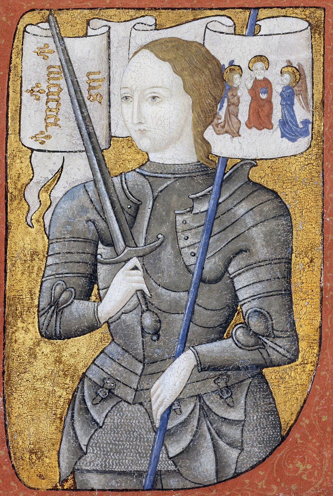

İdam ve Yargılama
Yüzyıl Savaşları'nın Bakiresi: Jeanne d'Arc'ın Yakılarak İdamı
Yazar: Azrail
•
04 Ekim 2026 23:37

Yüzyıl Savaşları sırasında Tanrı'dan vahiy aldığını söyleyerek Fransız ordusunu İngiliz işgaline karşı tarihi zaferlere taşıyan 19 yaşındaki köylü kızı Jeanne d'Arc (Orléans Bakiresi), 1430'da Burgonyalılar tarafından esir alınarak İngilizlere satıldı.
Rouen kentinde İngiliz yanlısı Beauvais Piskoposu Pierre Cauchon başkanlığında kurulan engizisyon mahkemesinde aylarca sorgulandı. Büyücülük, kafirlik ve savaşta erkek kıyafeti giymek suçlamalarıyla suçlu bulunarak ölüm cezasına çarptırıldı.
30 Mayıs 1431 sabahı Rouen'in Eski Pazar Meydanı'nda yüksek bir odun yığınının üzerindeki direğe bağlandı. Ateş yakıldığında bir haç tutarak son nefesine kadar 'İsa, İsa!' diye haykırdı. Küllerinin kutsal emanet haline getirilmesini önlemek için kalıntıları Sen Nehri'ne döküldü; 1920 yılında ise Katolik Kilisesi tarafından azize ilan edildi.